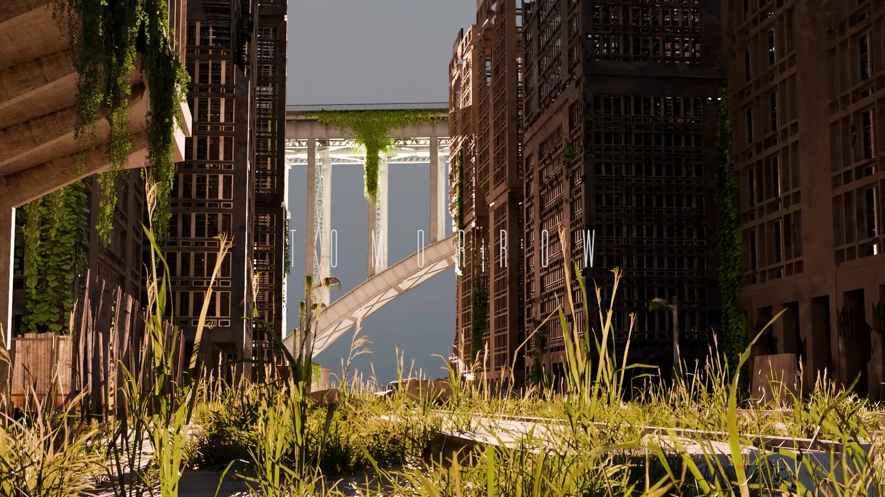
TOMORROW
모든 것이 무너진 절망적인 풍경 속에서도 더 나은 내일을 향한 희망을 이야기하는 3D 애니메이션입니다. 비가 내리는 춥고 어두운 새벽이 밝은 아침으로 변화하는 장면을 통해, 절망 속에서도 새로운 시작이 가능하다는 메시지를 전합니다.
A 3D animated film about the hope for a better tomorrow amid a landscape of ruin and despair. As a cold, rain-soaked dawn gives way to a bright morning, the film conveys that even in the darkest moments, a new beginning is possible.
(01) Story
오늘을 버텨내면
더 나은 내일이 기다리길
비가 내리는 춥고 어두운 새벽이 밝은 아침으로 변화하는 장면을 통해 희망을 표현했습니다. 미래, 문화, 기술을 상징하는 오브젝트를 선정하고 직접 모델링하여, 무너진 풍경 속에서도 그 의미가 남아 있는 공간을 구성했습니다.
A cold, rain-soaked dawn gives way to a bright morning, expressing a gradual shift from despair to hope. Objects symbolizing the future, culture, and technology were selected and modeled to create a ruined landscape where their meaning still endures.
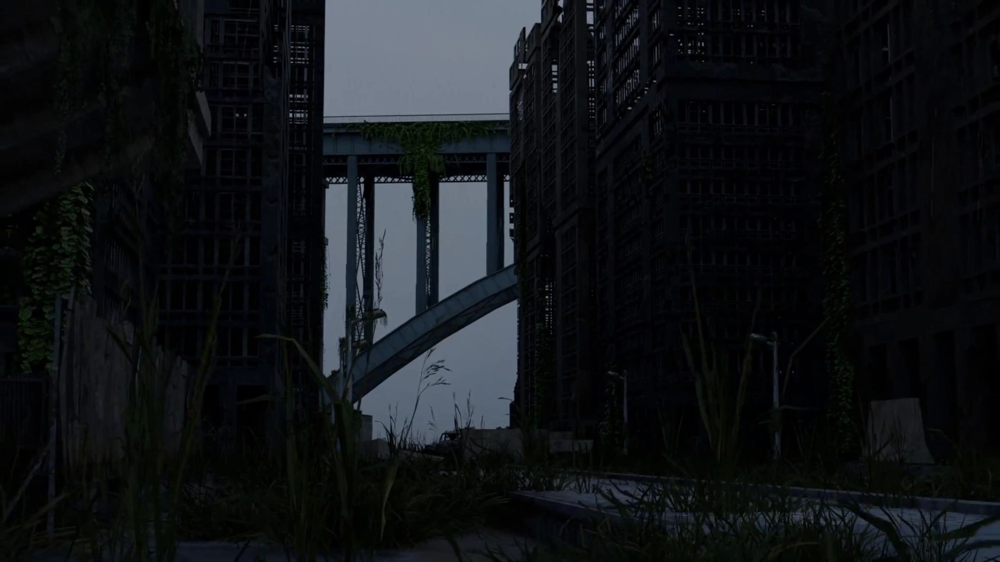
(02) Object
Future
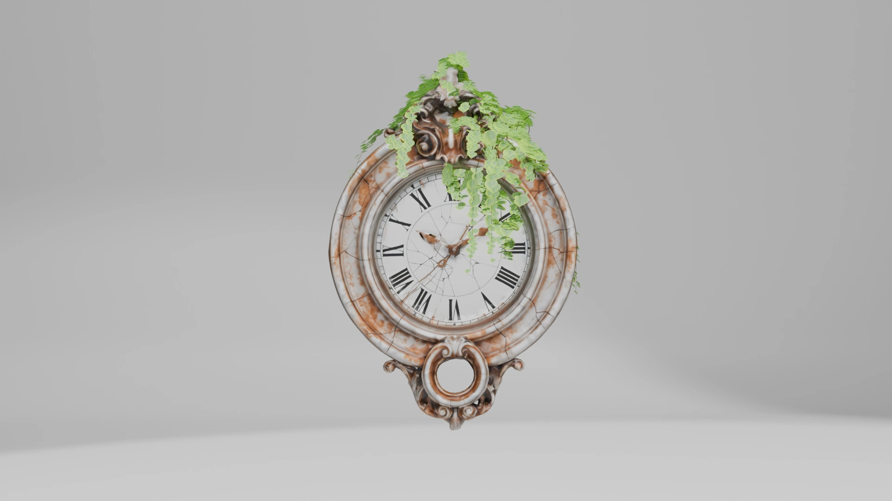
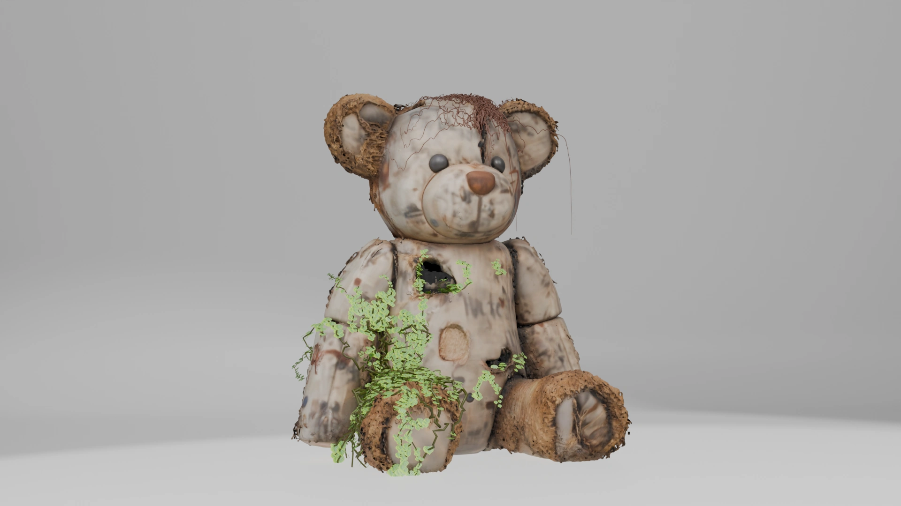
Culture
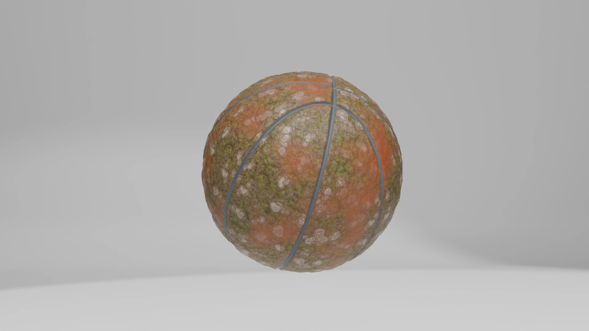
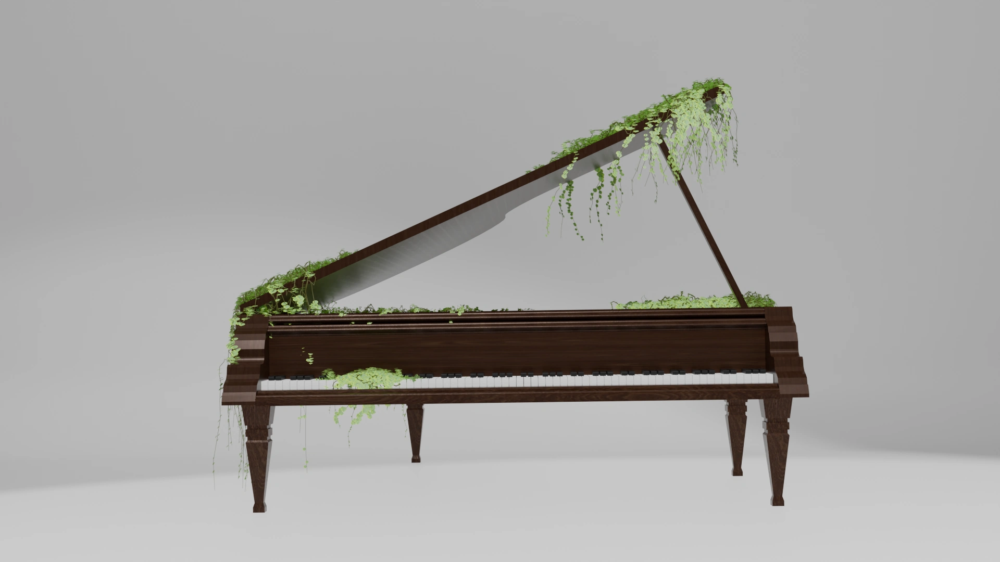
Technology
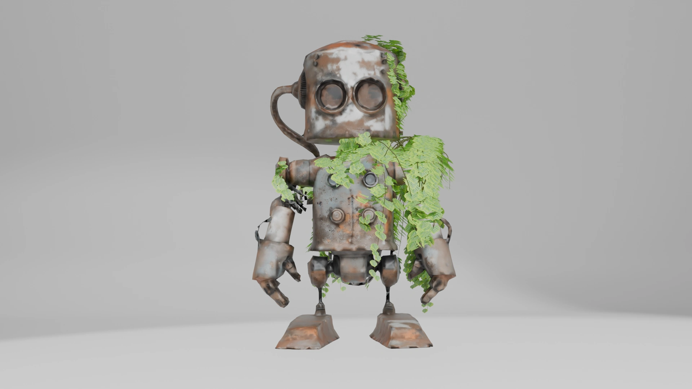
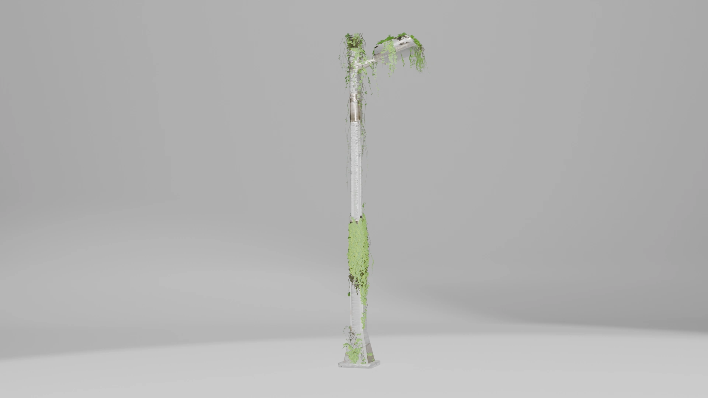

(03) Wireframe
Twilight night : Blender kit
Blender kit
ivy gen
Adobe Firefly
Google Ai Studio Veo3.1
Mewpot
(04) Output
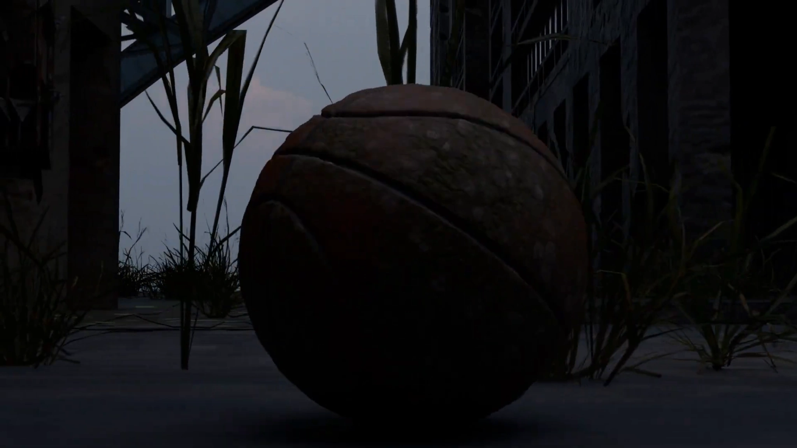
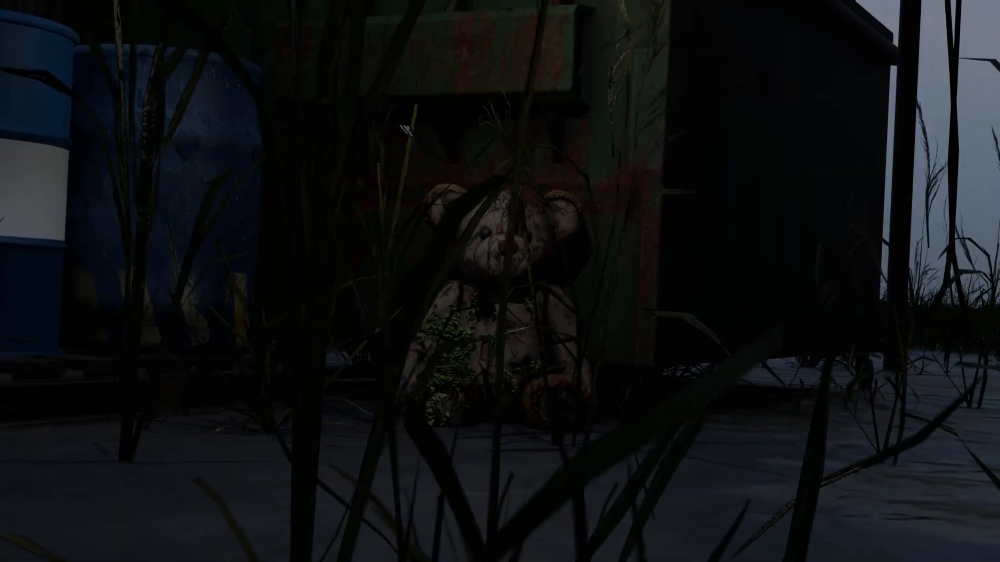
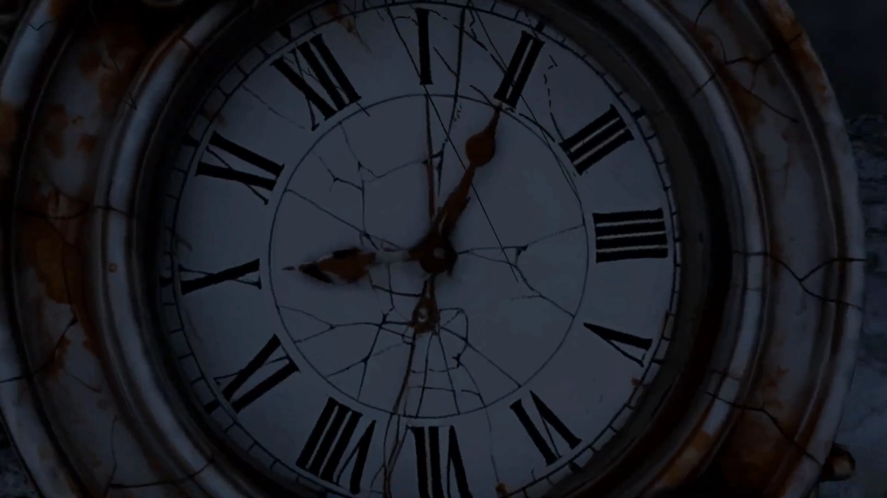
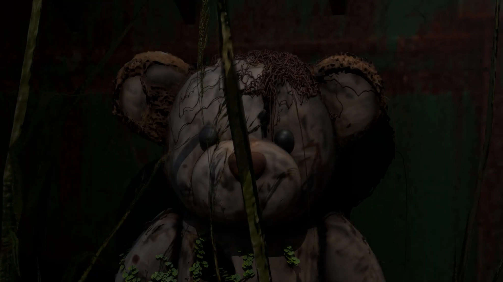
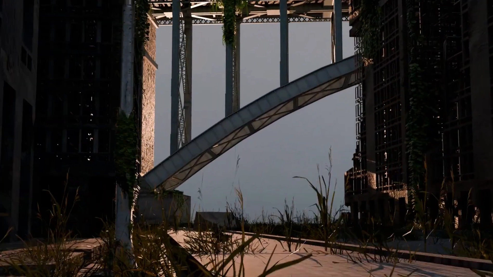
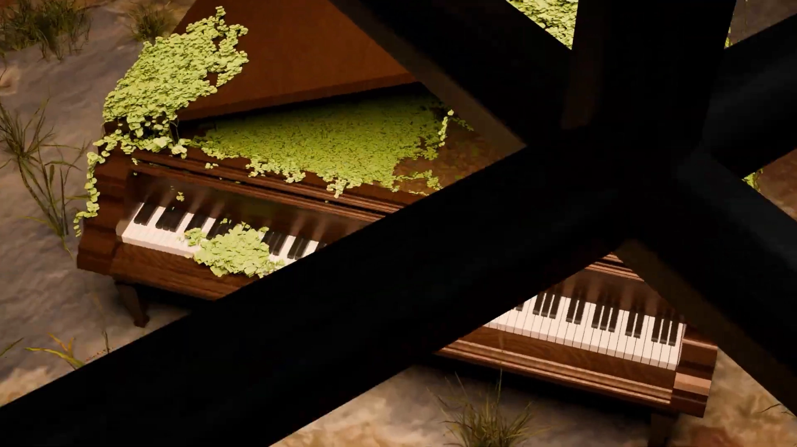
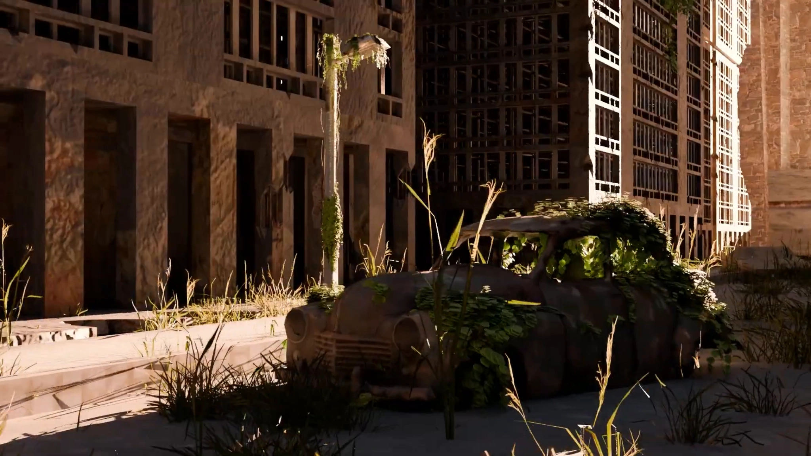
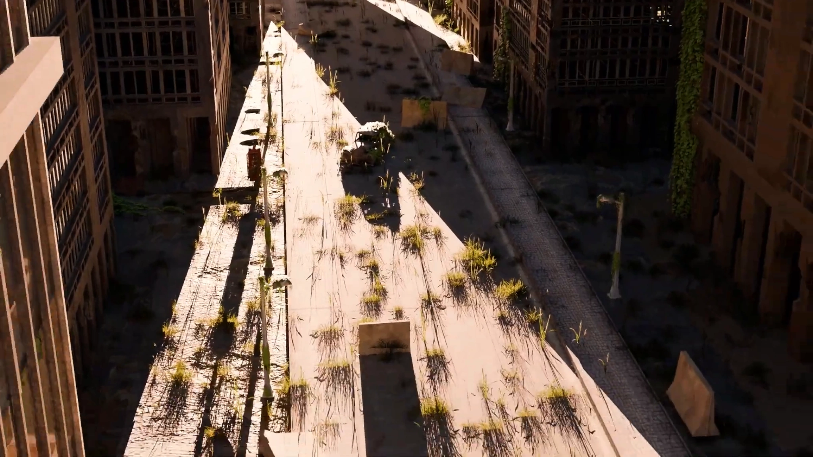
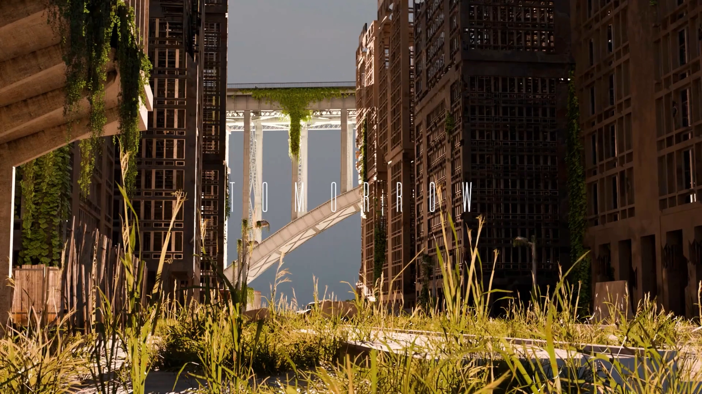